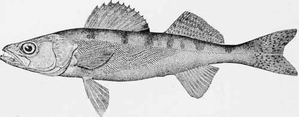

The Yellow Bass, White Bass, Rock Bass, Calico Bass, Crappie, Yellow Perch And Other "Boys' Fishes."
Description
This section is from the book "American Game Fishes", by W. A. Perry. Also available from Amazon: American Game Fishes: Their Habits, Habitat, and Peculiarities; How, When, and Where to Angle for Them.
The Yellow Bass, White Bass, Rock Bass, Calico Bass, Crappie, Yellow Perch And Other "Boys' Fishes."
The Sauger-Stizostedium Canadense
Description
Body elongate, more terete than in the Walleye, with the back broad and scarcely compressed; depth of the body four and one-half to five times in length; head quite pointed, about three and one-half in length, slope of the profile greater than in the Wall-eye; eye smaller, five to five and one-half times in the head; mouth rather smaller, the lower jaw included; maxillary reaching to opposite posterior margin of eye; opercle with a sharp, flat spine, usually a smaller one celow it, and an obscure one above; sometimes two or three smaller ones below, often none; the position and number of these spines extremely variable; specimens preopercle strongly serrate, the lower spines hooked forward; cheeks usually scaled-the hinder third, or less, sometimes naked; median furrow on top of head closely scaled. Coloration paler and more translucent, the shades less blended than in the Walleye; olive gray above, sides considerably brassy or pale orange, with much black mottling; the black gathered into several definite dark areas, the most distinct of these being opposite the second dorsal; two others fainter, at each extremity of the spinous dorsal, and one at base of caudal; these blotches are irregular and diffuse, but very characteristic; young specimens are pale orange, with broad black shades; spinous dorsal, with two or three rows of round black spots, one of each row on the membrane between each pair of spines; indistinct blotch on posterior part of the fin; a large black blotch at base of pectorals; second dorsal with about three rows of irregular dark spots; caudal yellowish and dusky, almost barred. Fin-rays: dorsal XII, 1-17, varying to XIII, i-t8; anal II, 12; lateral line with ninety-two-ninety-eight scales; pyloric caeca four to seven, four of them larger than the rest, of different lengths, all small and shorter than the stomach; the usual number is six, but the two small ones are sometimes one or both absent, sometimes duplicated. Length of adult 10 to 15 inches.
Everywhere to the North, from Quebec to the Ohio River and on north-westward to Montana, wherever the great Wall-eye goes, there is found its little brother, the Sauger. Like the Wall-eye, it is a long, slim, swift, pirate-rigged fish, with a mouth well armed with the sharpest of teeth. It is a fish of finer texture than the Wall-eye, richly shaded with yellow, and translucent when held up to the light. The Sauger ranks as a food fish lower than the Wall-eye, and is usually classed by the lake fishermen as a "soft fish," while the Wall-eye is unquestionably a hard one. But the difference may come solely from the fact that the Sauger grows to a small size, seldom or never more than eighteen inches in length, and oftener not more than a foot. It is a fish of lakes and quiet rivers, often found on sandy bottoms, hence its name of "Sand Pike," heard in many localities. It is however not a Pike, and the name Sauger which belongs to no other fish is the best name that anglers can use for it. The very worst name for either species is the name "Salmon." In fact, for an angler to call any spiny-rayed fish a "Salmon," is an acknowledgment on his part that he is no angler at all, but simply a fish hunter to whom all fishes are so much meat, and who has no care for niceties in language, or for nicety in his work. The fact that the uneducated people of various Southern States who have never seen a Salmon, suppose the Pike-perch to be such, is not a justification for those who know better.
So far as the game-qualities of the Sauger are concerned, I know nothing which will distinguish him from the Wall-eye or the Perch. He is a carnivorous and voracious fish, not likely to let anything escape which seems to him good to eat.
Sauger or Sand Pike--Sttzostediufn can adense.
Every boy east of the Rocky Mountains begins his career as a real angler with the Sun-fish. He may have caught Horned Dace or Shiners with an angle-worm on a crooked pin, but to catch such fishes even the smallest boy knows is not angling. He feels his first real angler's enthusiasm when, seated on the projecting roots of the big sycamore tree, at the "old swimming-hole," he sees this little strutting fish, round as a dollar and resplendent in orange and green, trying to keep off intruders from its nest of gravel and sand. He throws his bait in the direction of the nest. The little fish sees a new enemy and makes a quick rush at the bait. The cork bobs excitedly. Excitement seizes the boy, and the little fish is the first prize of the young angler.
If he lives in the East or the North, the Sun-fish he takes will be the old-fashioned Sunny or Pumpkin-seed, Lepomis gibbosus, the brightest and most active of them all, although not the largest. Should he live in the South-west, some of the other species will fall to his lot; but all the genuine Sun-fishes stand in the same relation to their friend, the boy. Let me quote from Professor Goode's admirable account of the Youthful Fisherman:
"The 'Pumpkin seed' and the Perch are the first trophies of the boy-angler. Many are the memories of truant days dreamed away by pond or brook-side, with twine, pole and pin-hook, and of the slow homeward trudge, doubtful what his reception will be at home; pole gone, line broken, hook lost, the only remnant of the morning's glory a score of lean, sun-dried Perches and Sunnies, and, mayhap, a few Eels and Bull-heads, ignominiously strung through the gills upon a willow withe, and trailing, sometimes dropping from weary hands, in the roadside dust.
"Then in later youth came the excursion to some distant pond; the early start, long before sunrise, the cane-rods trailing over the tail-board of the wagon, the long drive between fresh forests and dewy meadows, the interested faces at the wayside windows. Then at the pond the casting of the seine for minnow-bait, the embarkation in the boat, the careful adjustment of sinker and float, and the long, delightful, lazy day, floating over jungles of Eel-grass and meadows of lily pads; now pulling in by the score the Shiners, Pumpkin-seeds and Perch; now passing hour after hour without a bite.
"Just as the nightingale and the lark, though eminent among the lesser song-birds of Europe, would, if native to America, be eclipsed by the feathered musicians of our groves and meadows, the Perch and Sun-fish yielded to the superior claims of a dozen or more game fishes. The Sun-fish and the Perch must not be snubbed, however, for they are prime favorites with tens of thousands of anglers who cannot leave home in quest of sport. They will thrive and multiply, almost beyond belief, in ponds and streams too small for Bass, and too warm for Trout and Land-locked Salmon; and I prophesy that they will yet be introduced in all suitable waters throughout the continent, which they do not now inhabit."
Besides the real Sun-fishes, which the books call Lepomis, there are other fishes more like them and of the same family, which form a regular gradation in size and gameness, from the Pumpkin-seed to the king of our western and southern rivers, the Black Bass. And the boy recognizes this series. He knows that to catch a Red-eye is to place himself on the grade of promotion; above the Red-eye comes the Crappie, and above the Crappie the Calico Bass. One step more to the Black Bass. Could there be a more natural gradation? Yet that these species are only Sun-fish of a larger growth goes without discussion.
Continue to:
- prev: The White Perch. Continued
- Table of Contents
- next: The Common Sun-Fish, Pumpkin-Seed Or Sunny-Lcpovlis Gibbosus (Linnaeus)